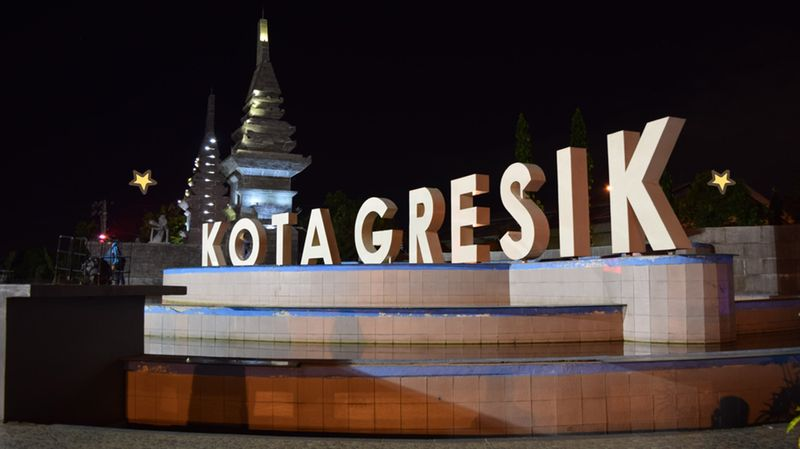
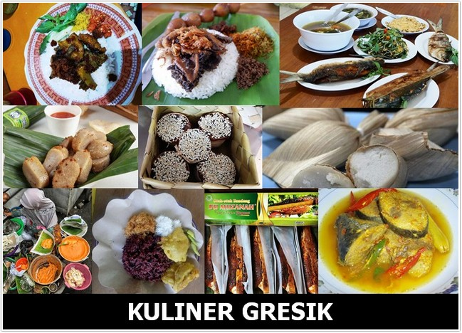
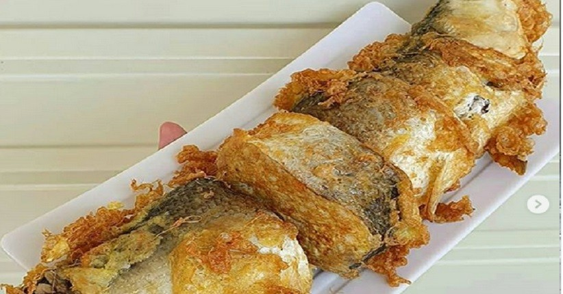
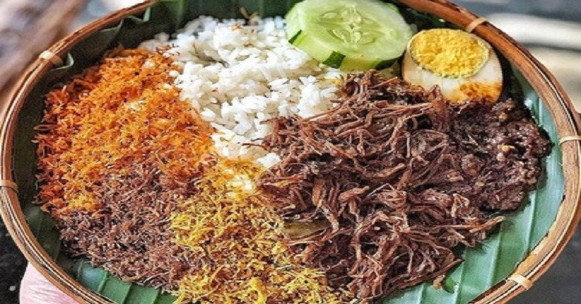
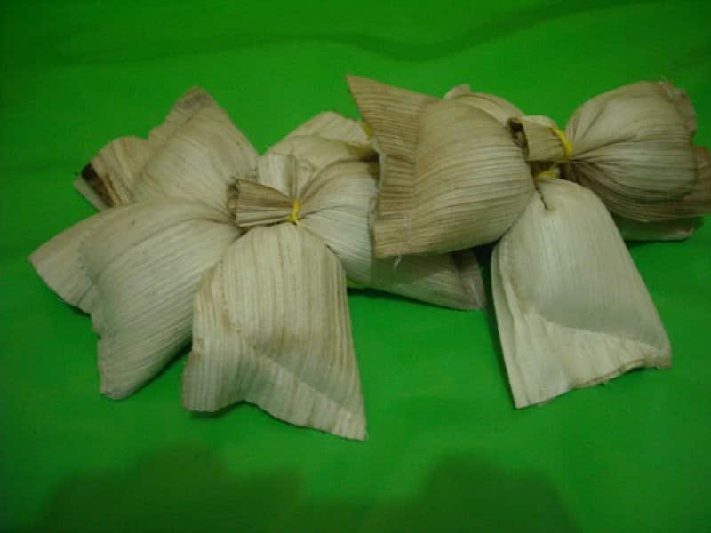
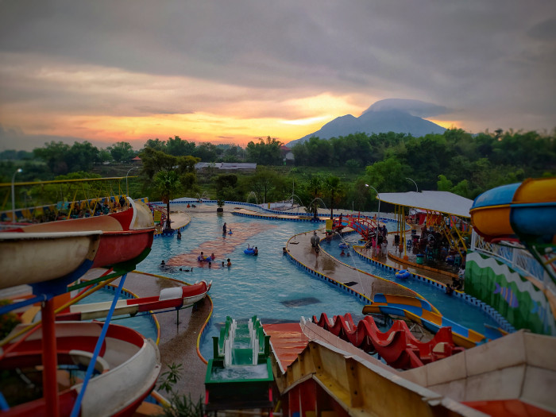
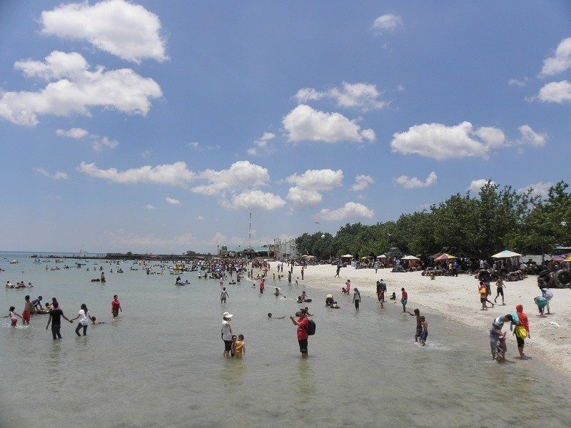
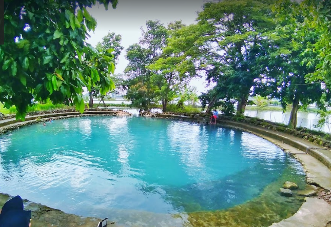
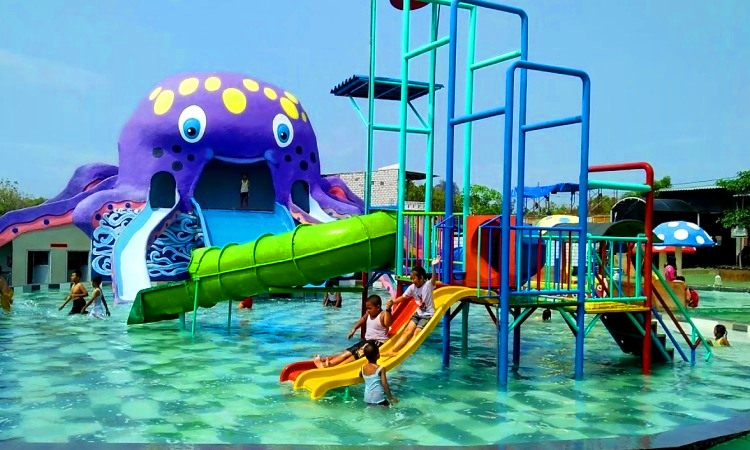

Sejarah Kota Gresik
Gresik sudah dikenal sejak abad ke-11 ketika tumbuh menjadi pusat perdagangan tidak saja antar pulau, tetapi sudah meluas keberbagai negara.Sebagai kota Bandar,gresik banyak dikunjungi pedagang Cina, Arab, Gujarat, Kalkuta, Siam, Bengali, Campa dan lain-lain. Gresik mulai tampil menonjol dalam peraturan sejarah sejak berkembangnya agama islam di tanah jawa. Pembawa dan penyebar agama islam tersebut tidak lain adalah Syech Maulana Malik Ibrahim yang bersama-sama Fatimah Binti Maimun masuk ke Gresik pada awal abad ke-11.
Kota Gresik terkenal sebagai kota wali, hal ini ditandai dengan penggalian sejarah yang berkenaan dengan peranan dan keberadaan para wali yang makamnya berada di Kabupaten Gresik yaitu, Sunan Giri dan Syekh Maulana Malik Ibrahim. Di samping itu, Kota Gresik juga bisa disebut dengan Kota Santri, karena keberadaan pondok-pondok pesantren dan sekolah yang bernuansa Islami, yaitu Madrasah Ibtidaiyah, Tsanawiyah, dan Aliyah hingga Perguruan Tinggi yang cukup banyak di kota ini. Hasil Kerajinan yang bernuansa Islam juga dihasilkan oleh masyarakat Kota Gresik, misalnya kopyah, sarung, mukenah, sorban dan lain-lain.
Semula kabupaten ini bernama Kabupaten Surabaya. Memasuki dilaksanakannya PP Nomer 38 Tahun 1974. Seluruh kegiatan pemerintahan mulai berangsur-angsur dipindahkan ke gresik dan namanya kemudian berganti dengan Kabupaten Daerah Tingkat II Gresik dengan pusat kegiatan di Kota Gresik.

Aneka Macam Makanan Khas Gresik

Otak - Otak Bandeng
Gresik adalah daerah yang berada di pesisir pantai utara, dan juga menjadi daerah penghasil ikan, yang salah satunya ikan bandeng. Olahan ikan bandeng yang ada di kota Gresik ini adalah Otak-otak bandeng. Otak-otak bandeng merupakan bentuk olahan yang mana daging ikan bandeng dikeluarkan tanpa merusak kulit ikan, kemudian daging yang dikeluarkan tersebut dicampur dengan bumbu-bumbu khas dan setelah itu dimasukkan kembali ke dalam kulit ikan bandeng tersebut dan dikukus. Setelah matang, daging bandeng dapat digoreng dengan dilumuri telur atau sesuai selera.
Mantap... Apalagi dengan nasi panas..

Nasi Krawu
Nasi krawu merupakan makanan khas dari daerah Gresik, Jawa Timur. Cirinya adalah nasinya yang pulen dan disajikan dengan daun pisang. Lauknya dapat berupa sayatan daging sapi, semur daging, jeroan sapi, sambal petis dan serundeng. Sambal terasi yang disajikan bersama dengan nasi krawu memiliki rasa pedas yang khas.
Nasi krawu ini sangat enak jika dihidangkan saat masih hangat..
Kalian yang bukan warga gresik harus mencobanya
Makanan favorit penulis btw wkwk

Pudak
Pudak adalah makanan khas dari Kabupaten Gresik, Provinsi Jawa Timur. Makanan ini memiliki rasa manis yang bersumber dari gula sebagai bahan bakunya. Cara memasaknya yaitu dengan cara dikukus. Bahan baku untuk membuat makanan ini adalah; tepung beras, gula pasir/gula Jawa, dan santan kelapa yang dibungkus dengan ope (pelepah daun pinang). Selain bahan-bahan tersebut, pudak juga ada yang berbahan utama sagu dan biasa disebut pudak sagu. Pada awalnya terdapat 3 macam pudak antara lain; pudak putih (berbahan gula pasir), pudak merah (berbahan gula merah), dan pudak sagu (berbahan sagu).

Tempat Wisata Kota Gresik

Pantai Delegan
Pantai Delegan adalah sebuah pantai yang masuk ke dalam salah satu obyek pariwisata andalan Kabupaten Gresik. Pesonanya telah menarik perhatian pengunjung dari berbagai kota di Jawa Timur, bahkan Jawa Tengah. Layaknya pantai utara Jawa yang lain, Pantai Delegan memiliki ombak yang relatif tenang. Pantai ini awalnya terkenal sebagai tempat bermain anak-anak karena pasirnya yang berwarna putih. Memasuki area pantai, sebuah bangunan gapura berwarna hijau siap menyambut. Selanjutnya pengunjung akan mendapati pantai pasir putih dengan ombak yang tenang, walaupun airnya tidak terlalu jernih. Selain bermain di pantai, pengunjung bisa menikmati ikan asap khas yang dijual penduduk setempat, ditemani es kelapa muda yang menyegarkan.

Banyu Biru Lowayu
Banyu Biru adalah Sendang atau mata air yang unik bahkan bisa dikatakan aneh, karena airnya berwarna biru secara alami, padahal di sekitarnya juga terdapat perairan berupa tambak-tambak. telaga ini memiliki air yang berwarna biru cerah. Aromanya tajam khas belerang. Warga sekitar memanfaatkannya untuk berendam. Konon air tersebut berkhasiat untuk menyembuhkan berbagai penyakit kulit. Sampai kini, warga setempat belum ada yang tahu dan bisa menjelaskan, bagaimana sendang itu bisa mengandung belerang. Apalagi di sekeliling kawasan itu, hanya ada hamparan tambak dan rumah-rumah warga.
Banyu Biru diperkirakan mempunyai kedalaman sekitar di atas satu meter. Sedangkan, pada dasar Banyu Biru itu tampak bebatuan berjejer apik dan masih asri. Warga setempat meyakini birunya air telaga karena Mbah Banyu Biru, makhluk halus penunggu danau. Makhluk halus ini diyakini bersemayam di pohon besar yang ada di tepi telaga. Karena itu dia kerap diberi persembahan sesaji.
Legenda yang lain menyebutkan tentang seorang putri jelita yang mencuci selendang birunya di telaga itu. Selendang puteri cantik hanyut sampai ke tengah danau. Rupanya itu perangkap dari naga penunggu sendang. Meski dengan sekuat tenaga sang puteri cantik berenang untuk mengambil selendang, ia tidak berhasil dan akhirnya tenggelam. Beberapa hari kemudian air telaga berubah menjadi warna biru.

Wisata Bajak Laut
Wisata Bajak Laut merupakan wahana air / kolam renang yang menarik untuk dikunjungi. Disini ada banyak sekali kolam renang yang disediakan oleh pengelola, mulai dari kolam renang anak, hingga kolam renang dewasa pun juga ada disini. Patung dan desain bajak laut membuat wahana air ini memiliki keunikan tersendiri dibandingkan dengan yang wahana air lainnya. Wisata Bajak Laut ini juga memiliki sebuah ikon yang menjadi ciri khasnya, yakni sebuah patung berbentuk cumi-cumi raksasa berwarna ungu.
Kolam renang di tempat wisata yang satu ini juga tersedia untuk anak-anak dan dewasa. Jadi, sangat cocok jika destinasi ini menjadi tempat berlibur untuk keluarga. Pada hari libur, tempat wisata ini cukup ramai dikunjungi banyak wisatawan. Banyak pengunjung dari berbagai daerah yang berlibur di sana.
